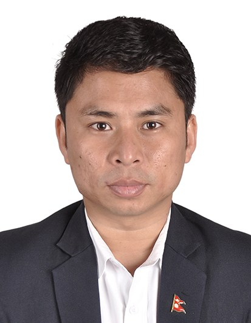
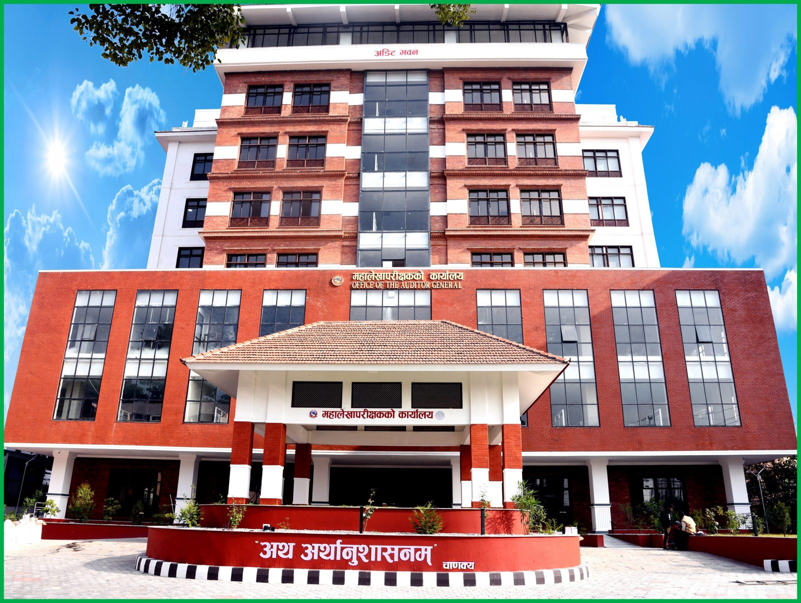
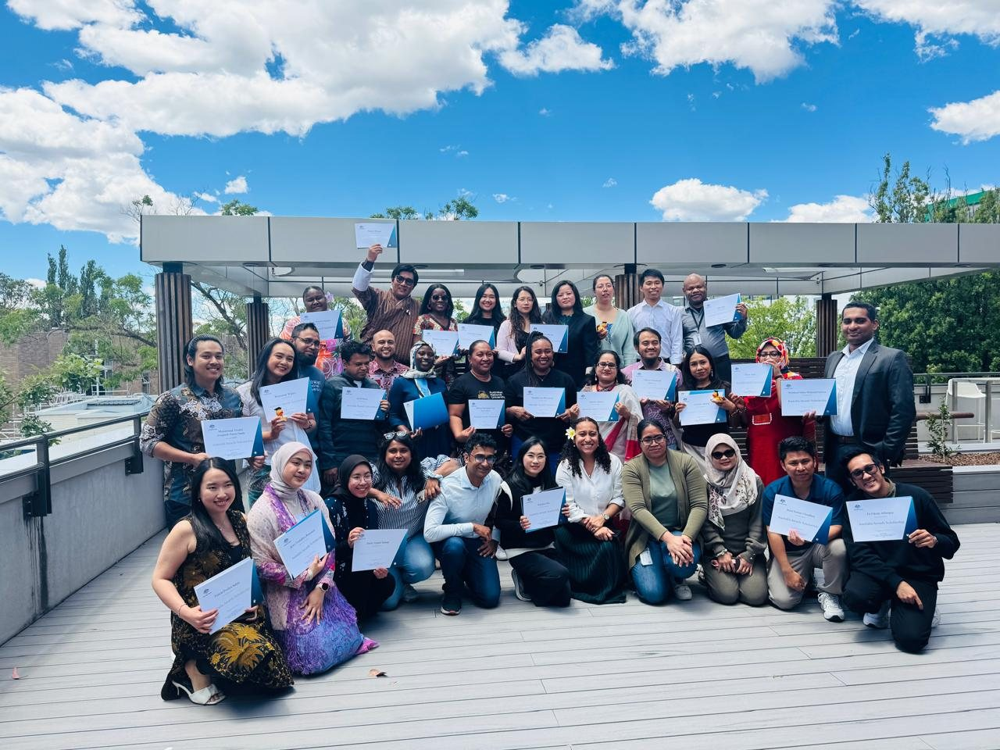
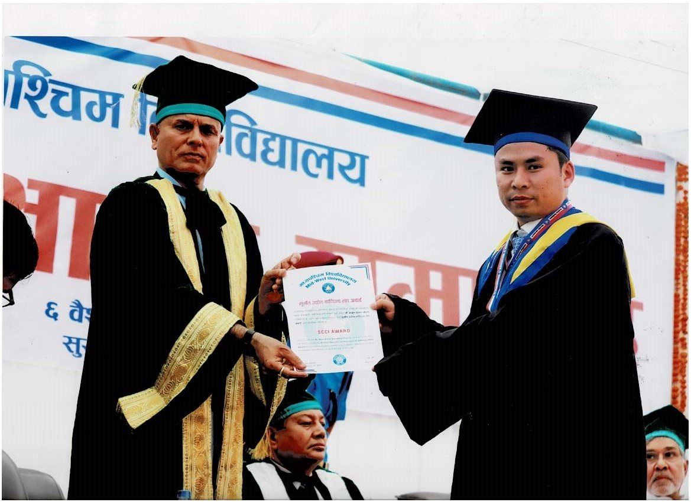
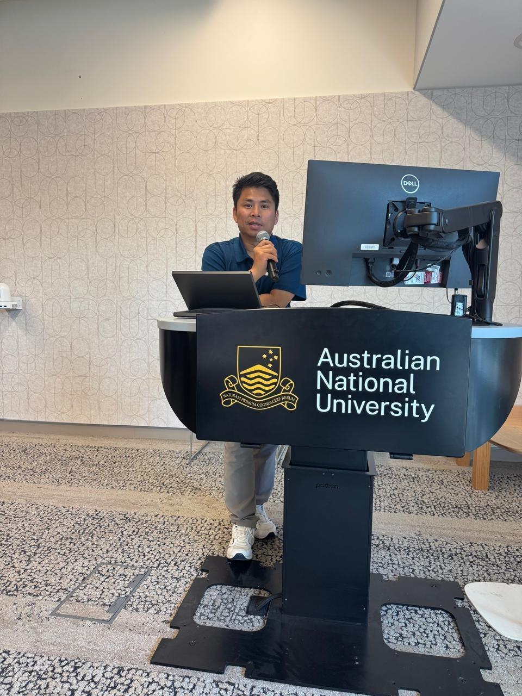
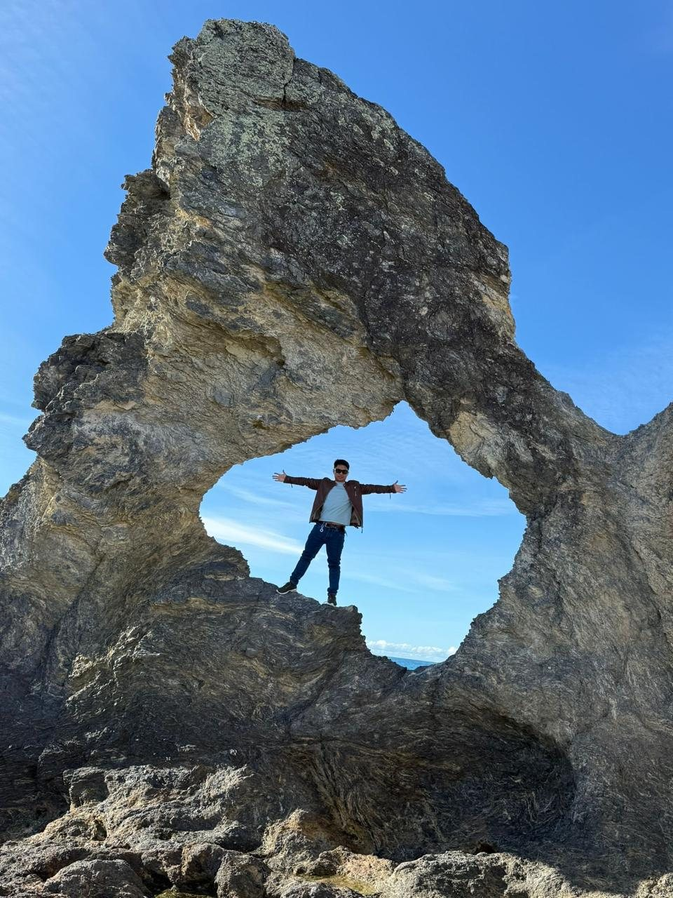

"Working where public audit, economics and accountable government meet.""जहाँ सार्वजनिक लेखापरीक्षण, अर्थशास्त्र र जवाफदेही शासन भेटिन्छन्।"
Australia Awards scholar. Master of Economics with Distinction, Research School of Economics, ANU College of Business and Economics — awarded 17 December 2025. Chancellor’s Medal, MBA. Audit Officer, Office of the Auditor General of Nepal, since 22 October 2018.अस्ट्रेलिया अवार्ड्स स्कलर। एएनयू रिसर्च स्कूल अफ इकोनोमिक्सबाट डिस्टिङ्क्सनसहित अर्थशास्त्रमा स्नातकोत्तर — १७ डिसेम्बर २०२५ मा प्रदान। एमबीएमा कुलपति पदक। २२ अक्टोबर २०१८ देखि महालेखापरीक्षकको कार्यालयमा लेखापरीक्षण अधिकृत।

I am an Audit Officer at the Office of the Auditor General of Nepal, based at Anamnagar, Kathmandu. Since October 2018 I have planned and executed audits of government revenue, customs, local levels, public enterprises and other entities as directed by the Auditor General — preparing programmes, examining statements, issuing preliminary reports and recommending issues for the annual audit report.म नेपालको महालेखापरीक्षकको कार्यालयमा लेखापरीक्षण अधिकृत हुँ, काठमाडौं अनामनगरमा कार्यरत। अक्टोबर २०१८ देखि महालेखापरीक्षकको निर्देशनअनुसार राजस्व, भन्सार, स्थानीय तह, सार्वजनिक संस्थान र अन्य निकायको लेखापरीक्षण योजना र कार्यान्वयन गर्दै आएको छु — कार्यक्रम तयार गर्ने, विवरण जाँच्ने, प्रारम्भिक प्रतिवेदन जारी गर्ने र वार्षिक प्रतिवेदनका लागि विषय सिफारिस गर्ने कामसहित।
I come from Phatuha in Rautahat, in Nepal’s Terai. Academic excellence has been a thread through my life — district topper at intermediate level, Tribhuvan University topper in BBS, Chancellor’s Medal for the MBA at Mid-West University, and later a Master of Economics with Distinction from the College of Business and Economics at the Australian National University.मेरो घर रौतहटको फतुहा हो। शैक्षिक उत्कृष्टता मेरो यात्राको सूत्र हो — इन्टरमिडिएटमा जिल्ला टपर, बीबीएसमा त्रिभुवन विश्वविद्यालय टपर, मध्य-पश्चिमाञ्चल विश्वविद्यालयको एमबीएमा कुलपति पदक, र पछि अस्ट्रेलियन राष्ट्रिय विश्वविद्यालयबाट डिस्टिङ्क्सनसहित अर्थशास्त्रमा स्नातकोत्तर।
As an Australia Awards scholar in Canberra I did more than deepen macroeconomic theory and public finance. I lived the everyday Australian way of life — food, neighbourhoods, sport, public parks — and sat at tables with classmates from every continent. That diversity sharpened how I think about Nepal’s own pluralism, and about how evidence and empathy must travel together in public institutions.क्यानबराको समयले समष्टिगत अर्थशास्त्र र सार्वजनिक वित्त मात्र गहिरो बनाएन। मैले अस्ट्रेलियाली दैनिक जीवन — खाना, छिमेक, खेलकुद, सार्वजनिक पार्क — अनुभव गरेँ र विभिन्न महादेशका सहपाठीहरूसँग सञ्जाल बनाएँ। त्यो विविधताले नेपालको बहुलता र सार्वजनिक संस्थामा प्रमाण र सहानुभूति सँगै जानुपर्छ भन्ने सोचलाई थप स्पष्ट बनायो।
"Public money is public trust. Audit is meaningful only when it is independent, evidence-based, and written so that citizens — not only specialists — can see how their government spends.""सार्वजनिक रकम भनेको सार्वजनिक विश्वास हो। लेखापरीक्षण त्यतिबेला मात्र अर्थपूर्ण हुन्छ जब यो स्वतन्त्र, प्रमाणमा आधारित र नागरिकले बुझ्ने भाषामा लेखिन्छ।"
Selected strands of work from the Office of the Auditor General and professional formation.महालेखापरीक्षकको कार्यालय र पेशागत तयारीबाट चयनित कार्यक्षेत्र।

Plan and execute audits of government revenue, customs, local levels, public enterprises and other entities as directed by the Auditor General — updating entity profiles, examining statements, issuing preliminary reports and recommending issues for the annual audit report.महालेखापरीक्षकको निर्देशनअनुसार राजस्व, भन्सार, स्थानीय तह, सार्वजनिक संस्थान र अन्य निकायको लेखापरीक्षण योजना र कार्यान्वयन — निकाय प्रोफाइल अद्यावधिक गर्ने, विवरण जाँच्ने, प्रारम्भिक प्रतिवेदन जारी गर्ने र वार्षिक प्रतिवेदनका लागि विषय सिफारिस गर्ने।
Issue preliminary audit reports of agencies, recommend issues for the current year’s audit report, prepare integrated financial statements of the ministry, and issue a report with opinions and coordinated communication.निकायका प्रारम्भिक लेखापरीक्षण प्रतिवेदन जारी गर्ने, चालु वर्षको प्रतिवेदनमा समावेश गर्नुपर्ने विषय सिफारिस गर्ने र मन्त्रालयको एकीकृत वित्तीय विवरण तयार गर्ने।
Evaluate, supervise and review subordinate employees, and approve deducting arrears within the limits determined by the office — keeping quality and integrity of fieldwork intact.मातहत कर्मचारीको मूल्याङ्कन, सुपरिवेक्षण र समीक्षा गर्ने तथा कार्यालयले तोकेको सीमाभित्र बक्यौता कट्टा स्वीकृत गर्ने।
Completed the 33rd Basic Administration Training (BAT-33) at the Nepal Administrative Staff College and Officer Level Induction Training on Public Finance Management with First Division at the PFM Training Centre (2019).नेपाल प्रशासनिक प्रशिक्षण प्रतिष्ठानमा ३३औं आधारभूत प्रशासन तालिम (BAT-33) र सार्वजनिक वित्तीय व्यवस्थापन तालिम केन्द्रमा प्रथम श्रेणीसहित अधिकृत अभिमुखीकरण तालिम पूरा।

Explored Australian living style, food, culture and diversity while completing the Master of Economics. Built a professional and personal network of classmates and colleagues from many countries — a resource I carry back into Nepal’s public institutions.अर्थशास्त्रको स्नातकोत्तर गर्दै अस्ट्रेलियाली जीवनशैली, खाना, संस्कृति र विविधता अनुभव गरेँ। विभिन्न मुलुकका सहपाठीसँग बनेको सञ्जाल नेपालका सार्वजनिक संस्थामा फर्केर काम गर्दा काम लाग्छ।
Life member since 2012. Recognition from the Tharu community and Tharu Welfare Assembly for academic standing and public service — a reminder that professional work sits inside a living culture.२०१२ देखि आजीवन सदस्य। शैक्षिक सफलता र सार्वजनिक सेवाका लागि थारु समुदाय र थारु कल्याण सभाको मान्यता — पेशा संस्कृतिभित्र बस्छ भन्ने स्मरण।
Master of Economics research project at the Research School of Economics, ANU. Using quarterly data from 2004Q1–2023Q4 and ARDL, VECM and FMOLS models, the paper finds a strong long-run positive effect of FDI on real GDP, while remittances — vital for household welfare — show weak or negative growth effects when estimated jointly with FDI. A negative interaction term points to crowding-out. Quantile results show FDI lifting growth in high-output phases; structural breaks appear in 2009Q4 and 2018Q1. The policy implication is to channel remittances into productive investment and to strengthen the institutions that attract lasting FDI.एएनयू रिसर्च स्कूल अफ इकोनोमिक्सको स्नातकोत्तर अनुसन्धान। २००४ देखि २०२३ सम्मको त्रैमासिक तथ्याङ्क र एआरडीएल, भीईसीएम तथा एफएमओएलएस मोडेलबाट एफडीआईले वास्तविक जीडीपीमा दीर्घकालीन सकारात्मक प्रभाव देखाउँछ भने विप्रेषण — घरपरिवारको कल्याणका लागि महत्त्वपूर्ण भए पनि — एफडीआईसँग संयुक्त अनुमान गर्दा वृद्धिमा कमजोर वा नकारात्मक देखिन्छ। नीतिगत निहितार्थ: विप्रेषणलाई उत्पादनशील लगानीमा लैजाने र दिगो एफडीआई तान्ने संस्था बलियो पार्ने।
A comparative time-series study of real wages, inflation and labour productivity in one advanced and one developing economy. For Australia, cointegration is identified around a 2005 break coinciding with the resource boom; long-run productivity elasticities with respect to real wages range from 0.41 to 0.95, and inflation is insignificant. For Nepal, wage elasticities lie between 0.77 and 0.90, with a small negative inflation coefficient. The paper is the first joint treatment of these three variables for Nepal on a common specification with Australia, and it speaks directly to wage-setting, fiscal space and the real value of public spending.एउटा उन्नत र एउटा विकासशील अर्थतन्त्रमा वास्तविक ज्याला, मुद्रास्फीति र श्रम उत्पादकत्वको तुलनात्मक अध्ययन। अस्ट्रेलियामा २००५ को स्रोत-उभारसँग जोडिएको संरचनात्मक परिवर्तनसहित सहसम्बन्ध देखिन्छ; नेपालका लागि यी तीन चरको संयुक्त समय-शृङ्खला उपचार यो पहिलो हो। सार्वजनिक क्षेत्रको तलब, वित्तीय क्षमता र सरकारी खर्चको वास्तविक मूल्यसँग जोडिन्छ।
Using twelve years of published OAGN annual-report data, the paper tracks personnel, expenditure, audit volume and outcomes. Audited transaction volume grew about fourfold while working staff grew 28 per cent, so workload per auditor rose sharply. Unit cost of oversight halved — from NPR 1.37 to NPR 0.68 per NPR 10,000 audited — but the annual irregularity rate fell below one per cent while the cumulative outstanding stock rose 5.5 times, to NPR 755 billion. The binding constraint, the paper argues, is not audit detection but post-audit settlement.महालेखापरीक्षकको कार्यालयका बाह्र वर्षका वार्षिक प्रतिवेदनबाट जनशक्ति, खर्च, लेखापरीक्षण परिमाण र नतिजा मापन। लेखापरीक्षण भएको कारोबार करिब चार गुणा बढ्यो भने कार्यरत कर्मचारी २८ प्रतिशत मात्र। निगरानीको एकाइ लागत आधा घट्यो, तर बक्यौता बेरुजु मौज्दात ५.५ गुणा बढेर रु. ७५५ अर्ब पुग्यो। बाध्यकारी समस्या पत्ता लगाइमा होइन, फछ्र्यौटमा छ भन्ने तर्क।
A public-finance reassessment of foreign aid. The claim is that quality — ownership, coordination, debt sustainability and public financial management — drives development outcomes more than the dollar amount. Desk-based evidence and comparative cases (Sri Lanka, Sierra Leone, Uganda, Gaza) show that weak institutions and unsustainable debt can erase the return on large inflows, while coordinated support tied to institutions creates fiscal space. The policy implication is to judge aid by whether it builds domestic capability, not by how much is disbursed.वैदेशिक सहायताको सार्वजनिक वित्त पुनर्मूल्याङ्कन। दाबी: स्वामित्व, समन्वय, ऋण दिगोपना र सार्वजनिक वित्तीय व्यवस्थापनजस्ता गुणस्तरले रकमको परिमाणभन्दा बढी विकास नतिजा निर्धारण गर्छन्। कमजोर संस्था र अस्थिर ऋणले ठूलो सहायताको प्रतिफल मेटाउन सक्छ। नीति: सहायतालाई बाँडिएको रकमले होइन, स्वदेशी क्षमता बनाउँछ कि बनाउँदैन भनेर नाप्ने।
Paper presented at the 1st Global International Conference on Leadership and Development, Global College International, Kathmandu.ग्लोबल कलेज इन्टरनेसनल, काठमाडौंमा आयोजित नेतृत्व र विकाससम्बन्धी पहिलो अन्तर्राष्ट्रिय सम्मेलनमा प्रस्तुत पत्र।
Awarded 17 December 2025 by the Australian National University with Distinction. Research School of Economics, College of Business and Economics. High Distinctions in Advanced Macroeconomic Analysis, Econometric Methods and Modelling, Macroeconomic Theory, Microeconomic Theory, and Applied Case Studies.१७ डिसेम्बर २०२५ मा अस्ट्रेलियन राष्ट्रिय विश्वविद्यालयबाट डिस्टिङ्क्सनसहित प्रदान। रिसर्च स्कूल अफ इकोनोमिक्स। उन्नत समष्टिगत विश्लेषण, इकोनोमेट्रिक विधि, समष्टिगत सिद्धान्त, व्यष्टिगत सिद्धान्त र प्रायोगिक केस स्टडीमा हाई डिस्टिङ्क्सन।
Short notes on study, service and the cultures that hold them.अध्ययन, सेवा र ती संस्कृतिहरूबारे छोटा टिपोट।
I explored the Australian way of living — weekend markets, public libraries that stay open, a food culture that borrows from everywhere, and a civic habit of lining up and waiting your turn. Distinction on the transcript mattered. So did sitting with classmates from Africa, East Asia, Europe and the Pacific and discovering that every country is arguing, in its own accent, about the same questions of tax, trust and public money. I brought that network and that patience back to Kathmandu.मैले अस्ट्रेलियाली जीवनशैली चिनेँ — साप्ताहिक बजार, खुला रहने पुस्तकालय, सबैतिरबाट आएको खाना, र पालो कुर्ने नागरिक बानी। ट्रान्सक्रिप्टको डिस्टिङ्क्सन महत्त्वपूर्ण थियो। अफ्रिका, पूर्वी एसिया, युरोप र प्रशान्तका सहपाठीसँग बसेर हरेक मुलुकले आफ्नै लवजमा कर, विश्वास र सार्वजनिक रकमका उही प्रश्न गरिरहेको देख्नु पनि उत्तिकै महत्त्वपूर्ण थियो।
Lived experienceअनुभवMost of the work does not look like a ceremony. It looks like a statement that does not tie, a customs valuation that needs another look, a recommendation written carefully enough that a ministry can act on it. Independence is not a slogan in this office. It is a habit of checking the numbers twice and leaving a paper trail a citizen could, in principle, follow.धेरैजसो काम समारोह जस्तो देखिँदैन। नमिलेको विवरण, फेरि हेर्नुपर्ने भन्सार मूल्यांकन, मन्त्रालयले काम गर्न सक्ने गरी लेखिएको सिफारिस। यस कार्यालयमा स्वतन्त्रता नारा होइन। यो अंक दुई पटक जाँच्ने र नागरिकले पछ्याउन सक्ने कागजात छोड्ने बानी हो।
Ongoing practiceचालु अभ्यासAn appreciation letter at Maghi — naming a university ranking and an audit posting in the same breath — is a particular kind of honour. It says the community is watching, and that a career in Kathmandu is still answerable to Dudhiawa and Phatuha. I have been a life member of Tharu Student Voice since 2012. That membership is older than the job, and it should outlast it.माघीमा आएको कदरपत्र — विश्वविद्यालयको स्थान र लेखापरीक्षणको पद एउटै सासमा — विशेष सम्मान हो। यसले भन्छ समुदाय हेरिरहेको छ, र काठमाडौंको जागिर अझै दुधियावा र फतुहाप्रति उत्तरदायी छ।
Communityसमुदाय


Official portrait · SCCI Award with the Vice-Chancellor · speaking at ANU · Australia Awards cohort · Office of the Auditor General · Australia.आधिकारिक तस्बिर · उपकुलपतिबाट एससीसीआई पुरस्कार · एएनयूमा प्रस्तुति · अस्ट्रेलिया अवार्ड्स समूह · महालेखापरीक्षकको कार्यालय · अस्ट्रेलिया।
For professional correspondence, research or public-finance collaboration, please write or call. Views on this site are personal and do not represent the Office of the Auditor General or the Government of Nepal.पेशागत पत्राचार, अनुसन्धान वा सार्वजनिक वित्तमा सहकार्यका लागि लेख्नुहोस् वा फोन गर्नुहोस्। यस साइटका विचार व्यक्तिगत हुन्, महालेखापरीक्षकको कार्यालय वा नेपाल सरकारका होइनन्।
Anamnagar, Kathmandu · Phatuha, Rautahat, Nepal अनामनगर, काठमाडौं · फतुहा, रौतहट, नेपाल